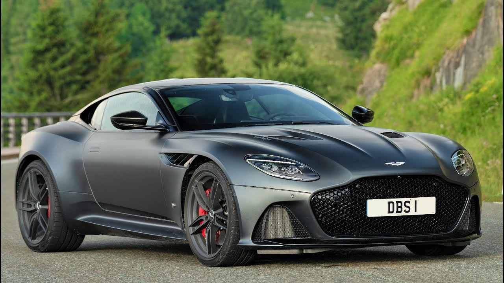

The ultimate Aston Martin. At least until the Valkyrie rocks up. And even when it does, this is the car that epitomises Aston’s brand values better than any other. Massively potent twin turbo V12 up front, rear-drive, 2+2 layout inside. How potent? 715bhp. Aston refers to it as a ‘brute in a suit’. Yes, really.
It sits above the £120k Vantage (‘Hunter’) and £140k-£175k DB11 (‘Gentleman’) at the summit of the three-strong model range, and features carbon body panels to help justify the £225,000 asking price. As you might be able to tell from the proportions, underneath it has a lot in common with the DB11 – same platform and basic engine – but the key addition is a high-torque version of ZF’s eight-speed gearbox. This is able to cope with 700lb ft of torque - approaching 200lb ft more than the standard ZF gearbox in the DB11 AMR. It’s not just a software recalibration – this gearbox has a different casing to contain the beefed up internals.
The key figure, says Aston, isn’t 715bhp, but the 663lb ft available from 1,800-5,000rpm. Aston is keen to point out that a Ferrari 812 Superfast falls 134lb ft short and makes you wait until 7,000rpm to get those 529lb ft. However, as we’ll see the DBS is a very different type of car. But not a slow one. Sending its power out through a mechanical LSD it has the ability to hit 62mph in 3.4 secs and on to a 211mph top speed – three tenths and 3mph faster than the DB11 AMR. Not huge gains on paper, but in reality...
The message is clear – the DBS Superleggera may share underpinnings with the DB11, but this is a more muscular machine in every way. 72kg lighter thanks to the carbon bodywork, and able to generate 180kg of downforce (split 60:120 front and rear) at maximum speed with no drag penalty versus the DB11. That’s for stability more than any track-focused shenanigans, as the DB11’s front end actually generates slight lift. Dynamically, the DBS Superleggera is pitched into the gap between sporting Vantage and GT-ish DB11.
“It has the ability to take your breath away – and currently it’s the only Aston you can say that about.”

For all Aston’s claims about the DBS’s sporting ability, this is not a radical step change but instead another pea from Aston’s GT pod. More honed and muscular than before, but essentially very similar to the DB11. I don’t doubt it’ll sell, but surely at the expense of DB11 sales.
We’ve heard so much about the extra investment going into Aston and this is not where it’s gone. Instead the DBS is another model to keep the firm ticking over until the new St Athan plant comes on line to build the DBX crossover. That, plus the Valkyrie and mid-engined supercar (in fact seven models over the next seven years), will be Aston’s chance to show there’s more to the company than a familiar range of sporting GTs.
Specs:
5204cc V12 twin-turbo, 715bhp @ 6500rpm, 663lb ft @ 1800-5000rpm, 0-62mph in 3.4sec, 211mph max, 22.9mpg, 285g/km CO2, 1693kg (dry)
Source/Reference: https://www.topgear.com/car-reviews/aston-martin/dbs-superleggera